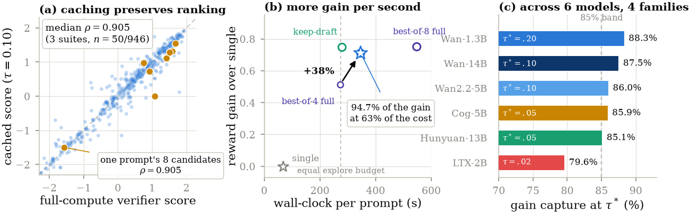
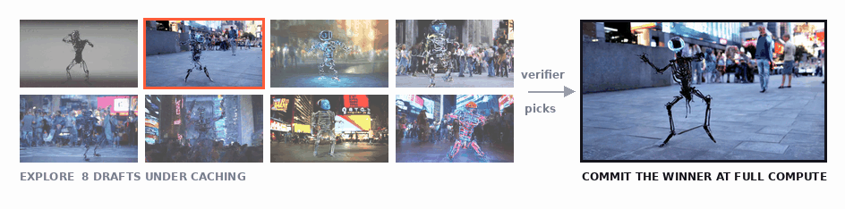
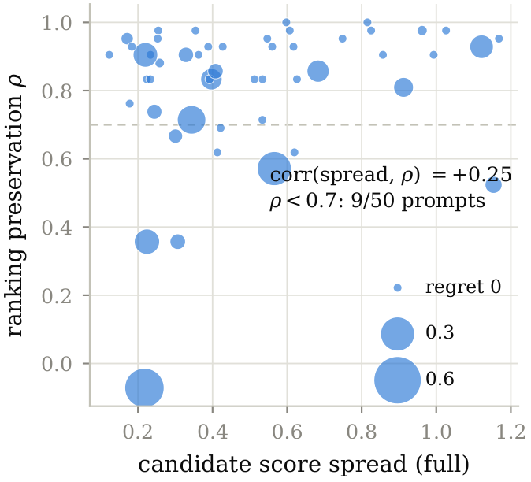
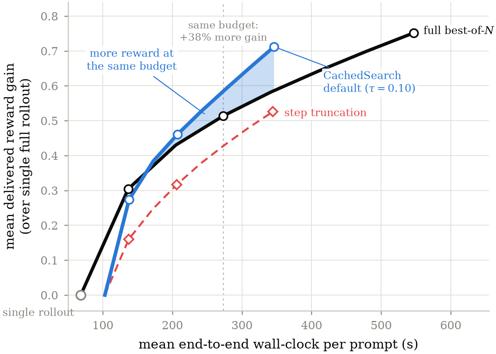
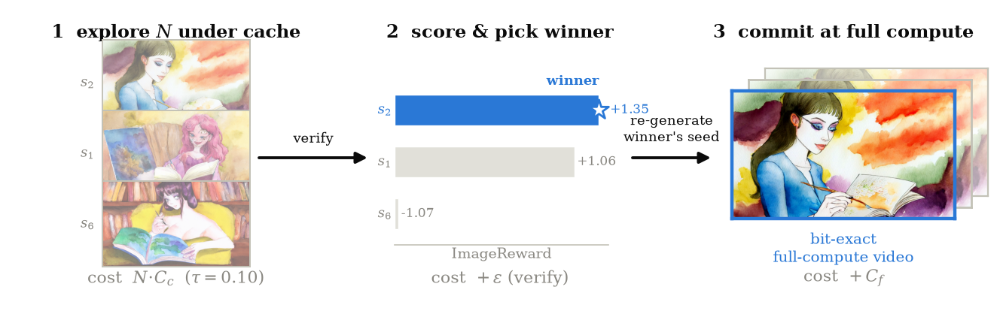
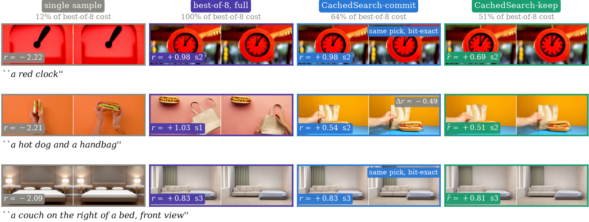
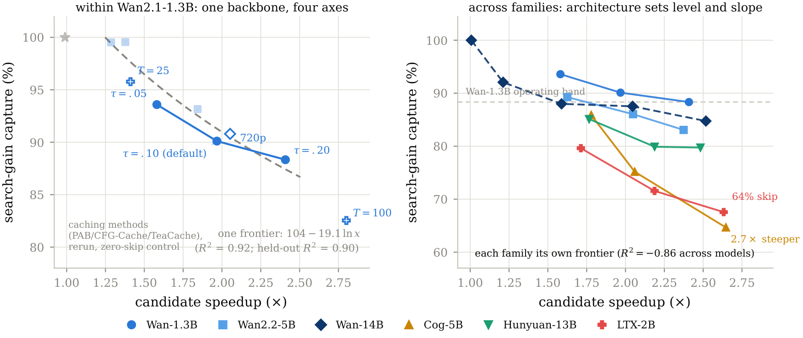

CachedSearch: Test-Time Search in Video Generation at Half Price
CachedSearch composes training-free caching with test-time search. It explores every candidate cheaply, then spends full compute only on the winner, keeping 94.7% of best-of-8's gain at 63% of its cost.

The result in one figure. Cached and full-compute twins preserve candidate rankings; CachedSearch keeps 94.7% of best-of-8's gain at 63% of its cost; calibrated operating points transfer across six models and four architecture families.

Thesis. CachedSearch is the first composition of training-free caching with test-time search for video diffusion. It cuts exploration cost without training a model or changing the search algorithm. The key is to preserve candidate rankings, then spend full compute only on the winner.
Main technical point. Cheap exploration must follow the same trajectory as the sample that will be delivered. Cached rollouts preserve full-compute rankings at roughly 2× speedup. Step truncation at the same speed does not.
Practical implication. Explore every candidate under caching, score them, and re-generate only the winning seed at full compute. At best-of-8, this keeps 94.7% of the search gain at 63% of the cost. It is a change to your search loop, not to your model: one function call, one calibrated threshold, any verifier (how to use it).
The problem
Test-time search improves generation by sampling several candidates, scoring them with a verifier, and keeping the best.[6][7] For video, that quality gain is expensive. A single 81-frame Wan2.1-1.3B rollout[1] takes about 68 seconds on our hardware. Best-of-8 takes about 547 seconds because all eight candidates are fully generated, even though seven are discarded.
Training-free caching attacks the other side of the problem. Methods such as TeaCache[2], PAB[3], FasterCache[4], and EasyCache[5] reuse activations across nearby denoising steps, often making a rollout two to three times faster. Search pays for many rollouts; caching makes each rollout cheaper. Yet the two had not been composed or evaluated together.
The missing question is not whether a cached video exactly matches its full-compute twin. Search only needs the cached candidates to predict the ordering of the full-compute candidates. If caching reshuffles that ordering, cheap exploration selects the wrong seed. If the ordering survives, most exploration can run at half price.
This shifts the evaluation target from visual reconstruction to decision fidelity: did the cheap pass identify the seed worth finishing?
The experiment
We test that question with seed-matched twins. For each prompt, we draw eight seeds and generate each seed twice: once at full compute and once with an EasyCache-style adaptive wrapper at threshold τ = 0.10. The cached rollout is 1.97× faster. Both versions begin from identical noise, so their difference comes from caching rather than the sampled trajectory.
ImageReward[12] scores each video. We compare the eight cached scores with the eight full-compute scores using rank correlation, top-1 agreement, and regret, the full-compute reward lost when cached ranking chooses a different winner. A 50-prompt gate established the signal. We then repeated the protocol on 946 VBench prompts[15] and 1,013 VBench-2.0 prompts.[17] This is the only place where prompt counts matter: the large suites test whether the gate result survives scale and harder content.
Finding 1: rankings survive
They do. Median per-prompt Spearman ρ is 0.905 on the gate and 0.905 again on VBench. Top-1 agreement on VBench is 72%, so nearly three quarters of prompts choose the same seed with cached and full scoring.
Exact agreement understates the useful result. When the cached winner differs, it is often almost as good as the full winner. Median regret is zero, and cached selection retains about 90% of the attainable search gain on VBench. VBench-2.0 reproduces the same pattern on a harder suite.
The repeated 0.905 median is not a claim that the two suites are identical. With eight candidates, Spearman ρ can take only a discrete set of values, and both medians land on the same rung. The important result is the stable ranking distribution and the low delivered regret.

Finding 2: failures are self-limiting

Ranking quality rises with candidate score spread: corr(spread, ρ) = +0.31 on VBench. Caching adds a modest perturbation to each candidate score, so it can reorder near-ties more easily than clearly separated candidates.
That same geometry limits the damage. Near-tied candidates offer little selection value, which means a ranking error there is cheap. Across spread quartiles, gain capture rises from 81% to 96% as the available gain grows. Even the corrupted tail retains 68% of its attainable gain. The failures land where choosing the wrong candidate matters least.
We also tested whether candidate spread could choose a different caching threshold for each prompt. A two-rollout probe did not improve on one fixed global setting. The spread signal explains where errors occur, but estimating it cheaply enough to steer the remaining rollouts gives back the advantage.
Finding 3: the budget is not enough, the trajectory is
The obvious alternative is to shorten every exploration rollout from 50 denoising steps to 25. This produces almost the same 2× speedup as caching, but the ranking signal collapses. At matched cost, caching reaches 0.905 ρ versus 0.512 for step truncation, captures 90.1% versus 72.6% of search gain, and incurs about 6× less regret.

The reason is structural. A 25-step rollout is a valid sample from a shorter schedule, but its score ranks that shorter-schedule output. The commit stage delivers the corresponding 50-step sample, which may evolve differently. Caching instead perturbs the same 50-step trajectory. Cheap exploration succeeds only when it predicts the sample that commit will actually deliver.
The method and what it delivers

CachedSearch follows directly:
- Explore all N seeds with a training-free caching engine.
- Score the cached candidates and select the winner.
- Re-generate that seed at full compute.
The delivered video is a genuine full-compute sample. Whenever cached and full rankings agree, it is the same sample full best-of-N would have selected. No training or auxiliary predictor is required, and the search method and verifier remain unchanged.

At N = 8, commit delivers 94.7% of full best-of-8's reward gain at 63% of its cost. The budget view is even simpler: for roughly the cost of full best-of-4, CachedSearch can explore eight candidates and deliver 38% more gain. It searches twice as wide for the same money.
Wider search does not erase the benefit. Gain capture rises to 95.7% at N = 16 and remains stable at N = 32, even though exact top-1 agreement falls. Larger pools create more near-equal winners, so selecting a different seed need not reduce delivered value.
The advantage is not confined to the verifier used for selection. Under the standard video metric suite, commit tracks full best-of-8 while using 64% of its wall-clock and 61% of its analytic FLOPs. This matters because it tests delivered videos, not only the scores that chose them.
The exploration engine is modular. We inserted four caching choices into the same protocol:
| Exploration engine | Delivered gain (% of best-of-8's) | End-to-end cost (% of best-of-8) |
|---|---|---|
| No caching (control) | 100.0 | 114 |
| PAB[3] | 99.5 | 90 |
| CFG-Cache[4] | 99.5 | 85 |
| TeaCache[2] | 96.1 | 67 |
| EasyCache-style, τ = 0.10 | 94.7 | 63 |
Within one backbone, every engine, threshold, schedule, and resolution lies on one capture-versus-speedup frontier. The fitted frontier predicts held-out schedules and 720p within about two points. TeaCache is the balanced choice when fidelity matters more; the default EasyCache-style engine favors savings. Any tested engine drops in without changing CachedSearch.

The mechanism holds across six models and four families from 1.3B to 14B, but a threshold does not transfer unchanged. Fidelity tracks architecture more than parameter count. Within the Wan family, median ρ remains 0.905 from 1.3B to 14B, while the absolute saving per cached candidate grows from about 34 to 175 seconds. A new family needs a short calibration pilot. CachedSearch also composes with other search accelerators. Stacking it with mid-trajectory pruning produces a 3.11× exploration speedup at 88.6% gain capture.
Honest edges
Commit mode removes cached-video artifacts from the delivered sample, but keep mode does not. Its main measured failure is motion dampening: mean optical flow falls about 3% at the default threshold and 8% at the aggressive setting. Learned reference-free verifiers can miss or even reward that reduction because calmer frames may score better. Motion-sensitive uses should commit and audit direct temporal metrics.
Few-step distilled models form the other boundary. Caching exploits repeated computation across a denoising trajectory, and shorter schedules offer less redundancy. Our 25, 50, and 100-step study shows reuse growing with schedule length. CachedSearch is therefore strongest on standard or long schedules, not the most compressed few-step regime.

Tested models
These are the backbones we measured. The threshold shown is the most aggressive setting that still keeps at least 85% of search's gain, with capture and speedup reported at that setting.
| Model | Params | Family | Recommended τ | Gain capture | Exploration speedup |
|---|---|---|---|---|---|
| Wan2.1-T2V-1.3B | 1.3B | Wan | 0.20 | 88.3% | 2.41× |
| Wan2.1-T2V-14B | 14B | Wan | 0.10 | 87.5% | 2.05× |
| Wan2.2-TI2V-5B | 5B | Wan | 0.10 | 86.0% | 2.05× |
| CogVideoX-5B | 5B | CogVideoX | 0.05 | 85.9% | 1.78× |
| HunyuanVideo | 13B | HunyuanVideo | 0.05 | 85.1% | 1.77× |
| LTX-Video | 2B | LTX | 0.02 | 79.6% | 1.71× |
The method is not limited to this list. It is a training-free wrapper around generation, so it applies to any diffusion or flow-matching video model whose sampler is deterministic in the seed, which covers essentially every current open text-to-video pipeline. These six are simply the ones where we measured the numbers ourselves, across four architecture families and a 1.3B to 14B size range. For anything else, run the calibration once and use the threshold it reports. Fidelity tracks architecture family rather than parameter count, so a threshold calibrated on one member of a family transfers to its other sizes. LTX-Video is the honest boundary case in our set: no threshold we measured reached 85% capture, which is exactly what the calibration is meant to surface before deployment rather than after.
How to use this on your model
The method is a wrapper around generation, not a new model, so adopting it is a change to your search loop rather than to your checkpoint. If you already generate a handful of candidates and keep the best one, the drop-in version is three lines:
from cachedsearch import cached_search result = cached_search(pipe, prompt, n=8, tau=0.10) result.video # a genuine full-compute sample, at about 63% of best-of-8 cost
pipe is any diffusers video pipeline
(Wan, CogVideoX, HunyuanVideo, and LTX-Video all work). The verifier
defaults to ImageReward averaged over eight frames, the scorer behind
every number in this post; pass verifier=
to use whatever your workflow already trusts, any callable taking frames
and a prompt and returning a number. Under the hood
the call generates all N candidates with caching enabled, scores the
cheap drafts, and then regenerates only the winning seed with caching
off. Since the sampler is seed-deterministic, the video you ship is the
same one full-compute search would have produced whenever both pick the
same seed. Caching changes which candidate you choose, never the quality
of what reaches the user.
One number is model-specific: the caching threshold. Fidelity tracks architecture family rather than parameter count, so calibrate once per family and reuse it across sizes. The repository ships the calibration as a script that runs this post's protocol in miniature, roughly two GPU-hours on a small model, and prints the most aggressive threshold that still retains 90% of search's gain:
python examples/calibrate_new_model.py --model <hf-id> --prompts your_prompts.txt
Measured starting points: 0.10 for the Wan family, 0.05 for CogVideoX and HunyuanVideo, 0.02 for LTX-Video. Copying a threshold across families is the one mistake that silently costs you selection quality, which is exactly what the calibration protects against.
Everything else composes with what you already run. Any published training-free cache can serve as the exploration engine, so a stack already using TeaCache or PAB keeps it and simply gains the explore-cheap, commit-full structure. Any verifier works. Pruning-based search composes multiplicatively, which we measured at a 3.11× exploration speedup when stacked with mid-trajectory pruning.
Practitioner guide
- Need a full-compute deliverable? Use commit at the calibrated default: about 95% of search gain at 63% of cost.
- Motion is unimportant and savings dominate? Keep the cached winner at about 51% of full best-of-N cost.
- Have a fixed budget? Spend the saving on width. The default setting buys about 2× as many candidates.
- Porting to a new architecture? Run a short rank-fidelity calibration; do not copy τ across families.
- Prefer a conservative balance? Pass TeaCache as the exploration engine; the call signature does not change.
- Do not replace caching with step truncation. Equal cost does not imply equal ranking value.
Every number above comes from per-candidate records containing seeds, scores, timings, and cache counters. The release will include those records and the scripts that regenerate the figures and tables.
Paper links, arXiv ID, and code URL will be added at release.
References
- Wan Team. Wan: Open and Advanced Large-Scale Video Generative Models, 2025.
- Liu et al. Timestep Embedding Tells: It's Time to Cache for Video Diffusion Model (TeaCache), 2024.
- Zhao et al. Real-Time Video Generation with Pyramid Attention Broadcast (PAB), 2024.
- Lv et al. FasterCache: Training-Free Video Diffusion Model Acceleration with High Quality, 2024.
- Zhou et al. Less is Enough: Training-Free Video Diffusion Acceleration via Runtime-Adaptive Caching (EasyCache), 2025.
- Ma et al. Inference-Time Scaling for Diffusion Models beyond Scaling Denoising Steps, 2025.
- Liu et al. Video-T1: Test-Time Scaling for Video Generation, 2025.
- He et al. Scaling Image and Video Generation via Test-Time Evolutionary Search, 2025.
- Yang et al. CogVideoX: Text-to-Video Diffusion Models with an Expert Transformer, 2024.
- Kong et al. HunyuanVideo: A Systematic Framework For Large Video Generative Models, 2024.
- HaCohen et al. LTX-Video: Realtime Video Latent Diffusion, 2024.
- Xu et al. ImageReward: Learning and Evaluating Human Preferences for Text-to-Image Generation. NeurIPS 2023.
- Xu et al. VisionReward: Fine-Grained Multi-Dimensional Human Preference Learning for Image and Video Generation, 2024.
- He et al. VideoScore: Building Automatic Metrics to Simulate Fine-grained Human Feedback for Video Generation, 2024.
- Huang et al. VBench: Comprehensive Benchmark Suite for Video Generative Models. CVPR 2024.
- Huang et al. VBench++: Comprehensive and Versatile Benchmark Suite for Video Generative Models, 2024.
- Zheng et al. VBench-2.0: Advancing Video Generation Benchmark Suite for Intrinsic Faithfulness, 2025.
Citation
Cite this blog as:
@misc{saini2026cachedsearchblog,
title = {CachedSearch: Test-Time Search in Video Generation at Half Price},
author = {Saini, Shreshth},
year = {2026},
howpublished = {\url{https://shreshthsaini.github.io/blogs/cachedsearch.html}},
note = {Blog post}
}
Cite the arXiv paper as:
@article{saini2026cachedsearch,
title = {CachedSearch: Training-Free Cached Exploration for Test-Time
Search in Video Diffusion},
author = {Saini, Shreshth and Birkbeck, Neil and Wang, Yilin and
Adsumilli, Balu and Bovik, Alan C.},
year = {2026},
note = {arXiv ID to be added at release}
}